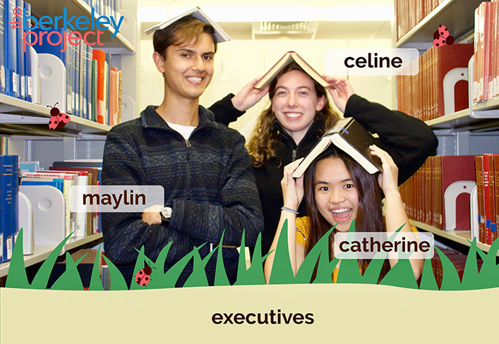

Volunteer Committee is responsible for creating the Site Leader/Volunteer application and selecting Site Leaders. From here, we plan and train Site Leaders to be effective points of contact and organizers of their respective volunteers. Ultimately, we are responsible for every Site Leader and Volunteer on BP Day (roughly 2,000 people) to ensure the event runs smoothly! :)
We organize the logistics of Berkeley Project Day, help fundraise, plan the BP Day before/after event, reach out to campus organizations, help strategize the BP Day theme all while getting to interact a little with every team. Our goal is to help coordinate the logistics of BP Day to bring together students and the community through volunteering. We love meeting all the diverse student groups on campus and getting them excited about giving back.